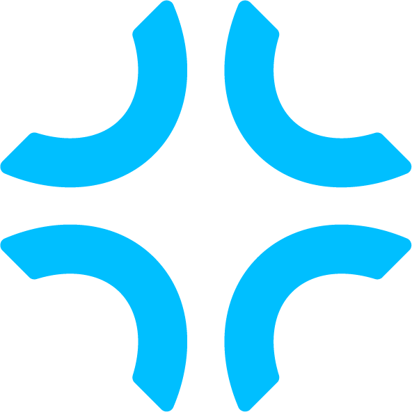

Founder content
Turn real founder insight into a high-volume content and learning loop.

JunctionPrivate betaTell Junction what the company is trying to achieve. Switch on the workflows you need. It runs the work, asks you for the decisions that matter and proves what happened.
Supervised by default · no send, publish or spend without your approvalOne governing goal keeps every routine moving in the same direction.
Inspectable sales and marketing systems with adjustable triggers, evidence and gates.
Silent consequential actions. Authority and execution stay explicit.
Each system exposes its trigger, evidence, steps, model, schedule, human gates and result. Turn it on, adjust it or pause it from one place.
Turn real founder insight into a high-volume content and learning loop.
Read each ad, reconcile commercial truth and return SCALE, HOLD or PAUSE.
Research the person and company, then prepare a short recipient-specific draft.
Junction is designed for product-led founders who want growth execution without becoming full-time marketing operators.
Resolve the offer, customer, goal, constraint and approval rules before recommending work.
Pin every provider to the company-owned account and smallest required capability.
Read current evidence, propose the next action and stop at decisions that need you.
Keep configuration, execution, provider readback and measured outcome separate.
Every material run carries the tenant, exact source, company goal version, agent version, proposed action, approval and expiry. That is how Junction becomes more capable without becoming less accountable.
The supervised product and onboarding flow are working locally. The isolated customer hostname is pending final infrastructure approval because app.getjunction.ai currently belongs to the separate Attention product.